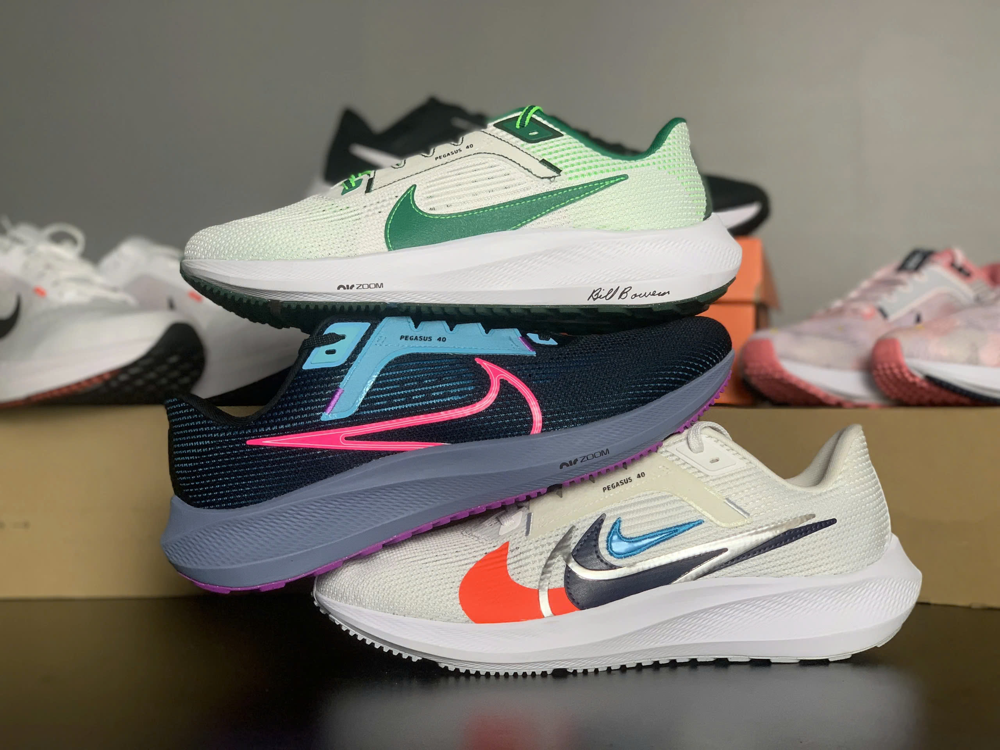
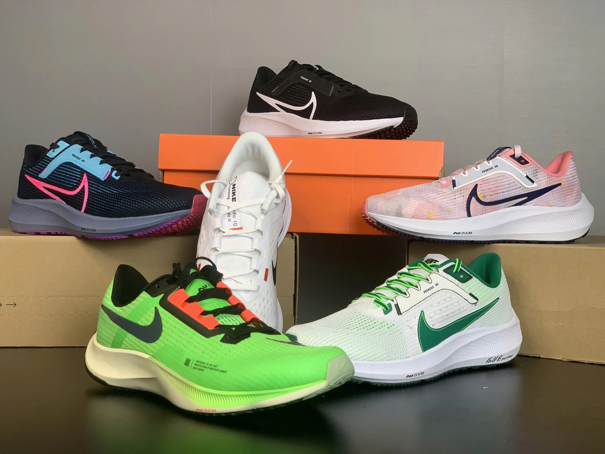

Giày Chạy Bộ Nike Air Zoom
Đôi giày chạy bộ Nike Air Zoom mang đến trải nghiệm thoải mái và hỗ trợ tối ưu cho người chạy bộ.
Điểm nổi bật:
- Công nghệ Zoom Air cải tiến.
- Thiết kế nhẹ, bền bỉ.
- Phù hợp cho mọi loại địa hình.
Nike Air Zoom: Bước Chân Mạnh Mẽ Trong Sự Đổi Mới
Bạn là người đam mê chạy bộ, hoặc đang tìm kiếm một đôi giày chất lượng để sải bước trên những nẻo đường? Nếu vậy, thì bạn đã đến đúng nơi! Trong bài viết này, chúng ta sẽ cùng khám phá về dòng giày chạy Nike Air Zoom - một biểu tượng trong thế giới giày thể thao. Công Zoom Air là công nghệ đem đến sự thành công của đế chế Nike, nhắc đến Nike thì không thể không nhắc đến những dòng giày chạy Nike Air Zoom. Hãy cùng tìm hiểu về công nghệ đột phá này nhé!
Giới thiệu công nghệ Zoom Air
Zoom Air đã xuất hiện lần đầu vào năm 1995 và đã tạo nên sự thay đổi lớn trong giày thể thao. Sau 28 năm thì đây vẫn là công nghệ chủ chốt và được áp dụng nhiều nhất và luôn được đầu tư phát triển.
Thiết kế và cách thức hoạt động của công nghệ Air Zoom
Mấu chốt cộng của công nghệ nằm ở 1 túi khí được làm bằng vật liệu dẻo có độ bền cao được nén với 1 áp suất nhất định đồng thời để giữ cho cấu trúc được ổn định thì được thêm hàng nghìn sợi Tencel bên trong . Những sợi Tencel đóng vai trò giữ cho lớp bên ngoài cố định ở một phạm vi nhất định và cũng có tác dụng như những lò xo giúp tăng lực đàn hồi. Mỗi khi người sử dụng chạm đất “bóng khí” sẽ hấp thụ 1 phần lực và bị lén lại sau đó nhanh chóng bất trở lại vị trí ban đầu. Thiết kế này giúp đế giày hấp thụ lực tác động và phản hồi lại vừa tạo độ êm và lực đẩy.
SỰ ĐỔI MỚI VÀ CHẤT LƯỢNG CỦA DÒNG GIÀY CHẠY NIKE AIR ZOOM
1. Thiết Kế Thời Trang Và Hiện Đại
Một trong những điểm thu hút ngay từ cái nhìn đầu tiên chính là thiết kế của giày. Nike luôn biết cách kết hợp sự thời trang và hiện đại trong từng đôi giày Air Zoom. Điều này đồng nghĩa rằng bạn có thể tự tin mang chúng không chỉ khi chạy bộ mà còn khi tham gia vào các hoạt động hàng ngày. Bạn sẽ luôn tỏa sáng với phong cách thể thao!
2. Công Nghệ Air Zoom Đỉnh Cao
Air Zoom, đó chính là bí quyết thành công của dòng giày này. Công nghệ này đã được phát triển qua nhiều thập kỷ và đã chứng minh sự hiệu quả trong việc giảm áp lực lên chân, đồng thời tạo ra sự thoải mái đáng kinh ngạc. Điều này giúp bạn tận hưởng những bước chạy mạnh mẽ mà không cảm thấy mệt mỏi!
3. Đa Dạng Về Mẫu Mã
Không chỉ sở hữu công nghệ tốt, dòng giày chạy Nike Air Zoom còn rất đa dạng về mẫu mã. Dù bạn là người thích màu sắc sặc sỡ hay thiết kế tối giản, bạn đều có thể tìm thấy một đôi giày Air Zoom phù hợp với phong cách cá nhân của mình. Điều này cho phép bạn thể hiện bản thân và tự tin hơn khi đi chạy hoặc thậm chí chỉ đi dạo.
4. Chất Lượng Vượt Trội
Dòng giày chạy Nike Air Zoom không chỉ được yêu thích bởi thiết kế và công nghệ mà còn bởi chất lượng vượt trội. Chúng được sản xuất từ những nguyên liệu chất lượng cao, đảm bảo tính bền bỉ và độ êm ái. Bạn có thể hoàn toàn tin tưởng vào đôi giày này trong suốt cuộc hành trình chạy bộ của mình!